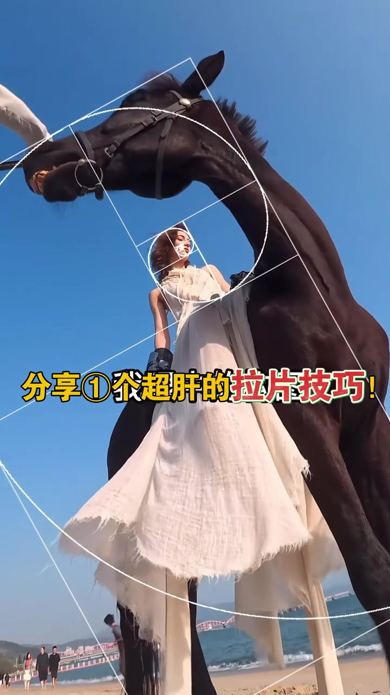
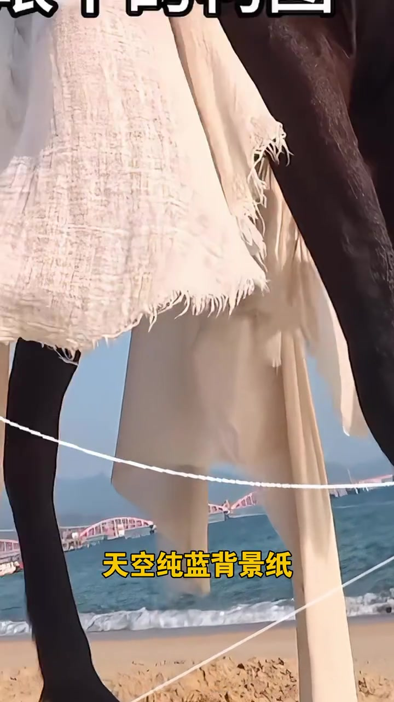
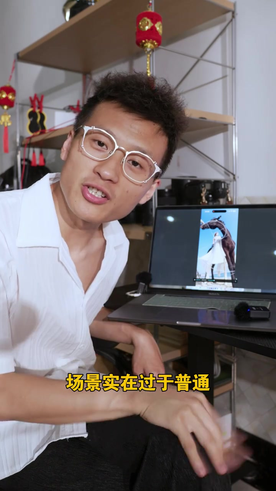
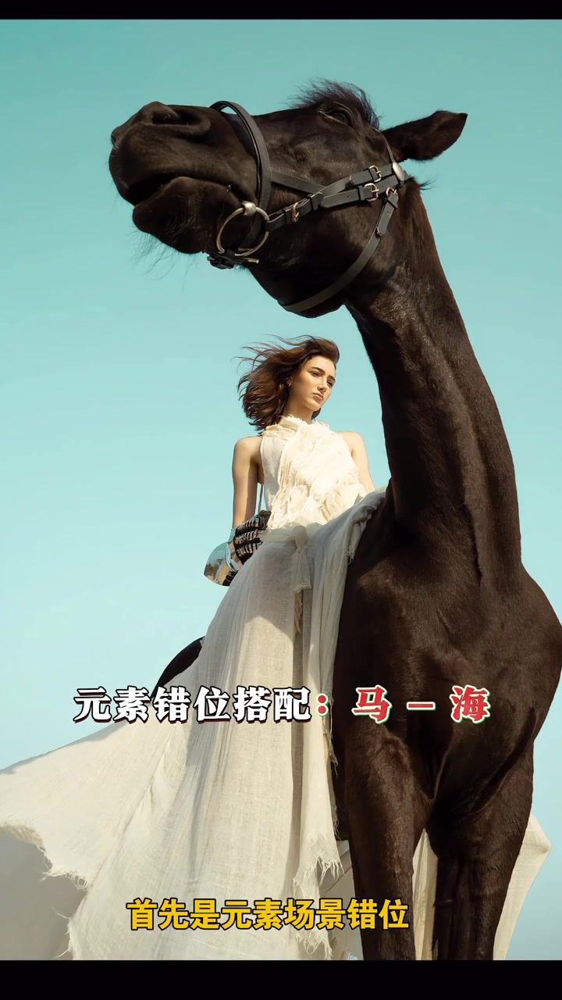
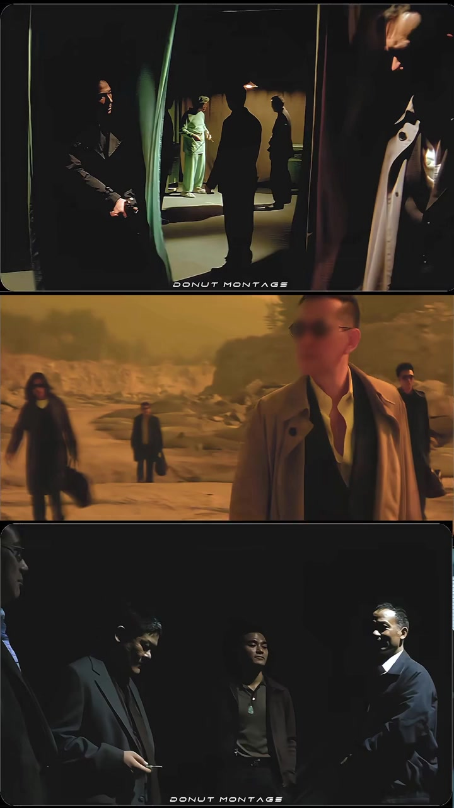
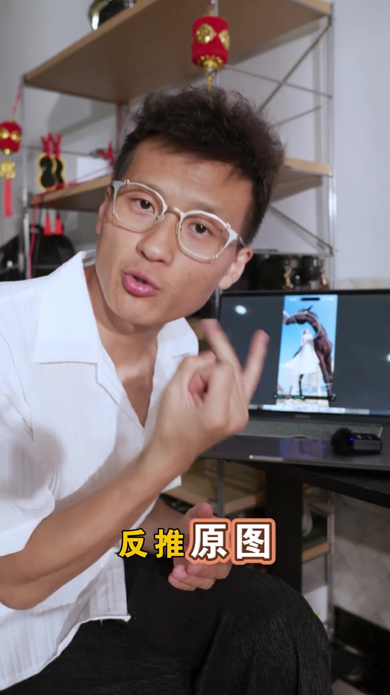

为什么从一张“百万开头”讲起
视频一开始就把目标定得很明确：分享一个“超肝”的拉片技巧，名字叫逆向反推。镜头先给出白裙女子骑黑马、仰拍加黄金螺旋的成片，字幕写着“我眼中的构图”“比如这张百万开头的照片”。冲击力确实强——但讲述者马上把话锋一转：真正值得拆的，是它怎么从普通场地做出来。
说明：Whisper 固定按中文识别时，把“拉片/百万开头/花絮图/沙滩/天空纯蓝背景纸/杜琪峰/原图/中前景/借位/构图/大概率/无脑去”等听成音近字；下文叙事以可见字幕与画面为准，文末转录区仍完整保留全部原始分段。
成片很猛，先别急着崇拜场景
画面停留在低机位仰拍：黑马占据前景，女子脸部落在螺旋中心，远处沙滩与行人被压得很小。讲述者先承认冲击力，再用一句“但其实是没超了”把期待拉回地面——成片的戏剧感不等于场地本身有多夸张。
可见字幕：“分享①个超肝的拉片技巧！”“比如这张百万开头的照片”

花絮图一出，场景立刻变普通
镜头切到花絮视角：沙滩、小浪花、远处游客与大桥一览无余。字幕把天空直接称作“天空纯蓝背景纸”——不是说真的挂了背景纸，而是强调天空干净得像一张纯色底。讲述者回到桌前，对着笔记本里的骑马画面说：“场景实在过于普通。”
于是问题从“这场地多牛”变成“原作者怎么在普通场地里做出冲击力”。
可见字幕：“因为从花絮图就能看到”“天空纯蓝背景纸”“场景实在过于普通”


元素错位，再加视线交叉
原作者的解法被拆成两步。第一步是元素场景错位：画面标出“元素错位搭配：马 - 海”，让马与海以非常规比例并置，形成夸张透视。第二步是视线相互交叉——讲述者补充，交叉站位在拍双人时特别常见，并举杜琪峰电影人物站位作参考。
可见字幕：“首先是元素场景错位”“而交叉在拍双人的时候用的特别多”“比如杜琪峰的电影人物站位”


想靠拉片进步：反推原图与原环境
讲述者把前面的拆解收成方法：若想靠自己拉片提升水平，不能只盯成片光环，而要通过别人的成片反推原图、反推原环境，再推出拍摄思路。画面给出第二张同类套路：前景巨大的马头框住远处持剑女子与白马，字幕写“这张也是同一个思路套路”。
可见字幕：“想靠自己拉片提升水平和技术”“反推原图”“进而得到他们的拍摄思路与想法”

花不够密时，用镜子借位做减法
第二个案例切到花丛前的女子：她蹲在地面镜子旁，镜面把粉花与脸叠进同一构图。讲述者说，如果你跑过很多外景就会知道——这样拍，大概率是现场花不够多、不够密，或周围中前景杂乱难处理，所以用镜子这种非常规借位；同时正好用上摄影做减法的原理，把杂乱环境挡掉，只留需要的花与人。
可见字幕：“大概率是这里的花不够多和密”“所以用镜子这种非常规的借位来拍”“刚好也用了摄影做减法的原理”
借位成片往往说明环境不够好；大环境大战则可无脑去
视频最后补一条判断规则：如果照片主要靠借位或巧妙角度才成立，那大概率客观环境不够好；反过来，若上去就是大环境、大场景，那这个地方可以“无脑去”。这不是鼓励偷懒，而是给拉片者一个现场预判：先分清“靠技巧补环境”还是“环境本身够强”。
可见字幕：“那大概率是客观环境不够好”“那这地方可以无脑去”
这一分钟带走什么
从百万开头骑马成片到花絮沙滩，再到杜琪峰站位、镜子借位与环境判断：视频真正教的不是“去哪找神地”，而是用逆向反推读懂成片背后的场地限制与构图决策。